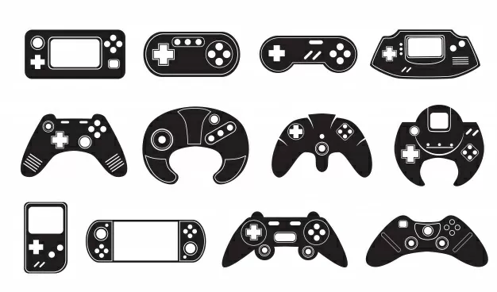
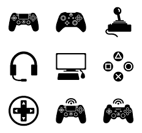

CURIOSIDADE NO MUNDO DOS GAMES

INTRODUÇÃO
Você que é apaixonado por games agora pode contar com uma revista virtual de confiança, com uma equipe antenada com o mundo dos games.
Falar de Game em dias atuais, é assunto para gente grande, os Games deixaram de ser meros instrumentos de diversão, e seus princípios, gráficos, interatividades estão adentrando o mundo real.
Todos os softwares e aplicativos, buscam inspiração nos mundo dos games, pretendento oportunizar ao usuário uma interatividade divertida, que possa incentivar o uso das ferramentas, tornando trabalhos e atividades cotidianas também divertidas, intuitivas e prazerosas.
Só nos resta fazer a pergunta: - E por quê só agora o mundo percebeu isso?! Ora, por quê não, a necessidade de trabalhar não pode se tornar cada vez mais uma experiência prazerosa, ou porque o uso de ferramentas não pode ser também divertido?!
E nesse clima, traremos sempre curiosidades sobre esse mundo, que cada vez mais faz parte do nosso dia a dia, tornando nosso mundo existêncial, também digital.
Venha com a gente descobrir as inúmeras curiosidades por detrás de nossos jogos, programas e aplicativos preferidos.

CURIOSIDADE SOBRE O MERCADO DE GAMES NO BRASIL
O Brasil está desenvolvendo sua própria cena de criação de jogos, com 375 empresas: informação do Censo da Indústria Brasileira de Games.
Das empresas desenvolvedoras, 71% são microempresas, segundo o Censo da Indústria.
73,4% dos brasileiros jogam jogos eletrônicos, de acordo com a Pesquisa Game Brasil (PGB) publicada neste ano.
Público gamer cresceu 7,1% no Brasil de 2020 em comparação a 2019, de acordo com o mesmo levantamento PGB, que ouviu cerca de seis mil pessoas.
Gamers brasileiros jogam 43,0% em console. Segundo dados da PGB.
Gamers brasileiros jogam 40,7% em PC. Segundo dados da PGB.
Brasil Game Show, em São Paulo, é a terceira maior feira de jogos do mundo. Com 325 mil visitantes.